Mboacare Documentation
This page will guide you through the necessary steps needed to setup your development environment for the Mboacare App on a Window PC. For Mac computers you can find the equivalent setup procedure by googling.
1. Setup a GitHub Account
If you don't already have a Github account, we can create one by following the steps below.
- Click on Sign up
- Follow the instructions to create and account it involves providing an email address, username and password
- Open a web browser and visit Github
2. Install Git
Our next step is to install Git. Git is version control tool that tracks changes to our code files on our computers.
- You can download git for windows from the Git Download page
- After downloading Git the next step will be to run the downloaded stepup file.
- To check if Git installed successfully, Open a command prompt window and type
git --version press Enter from your keyboard
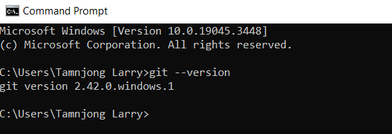
If you see an output similar to the screenshot above then git was successfully installed.
3. Install Flutter SDK
Flutter is cross platform UI framework on which Mboacare is built on hence inorder to run Mboacare development environment we need to setup the flutter development environment
- The flutter team has provided simple guide to installing the flutter SDK
- After installing flutter you can open a command prompt window and type
flutter --version
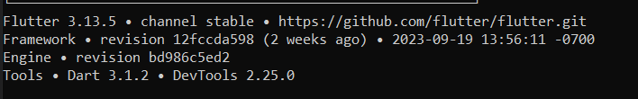
If you see an output similar to the screenshot above then flutter was successfully installed
4. Install an IDE (Intergrated Development Environment)
The next step after installing flutter will be to install an Intergrated Development Environment. The most common are Android Studion and Visual Studio Code. I usually prefer installing both.
- You can download the latest Visual Studio code release
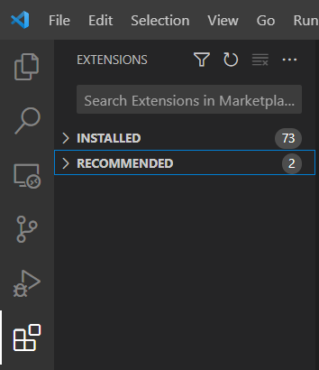
After downloading VS Code the next step will be to install the Dart and Flutter extension. Simple visit the extension tab like on the image above search for flutter and install
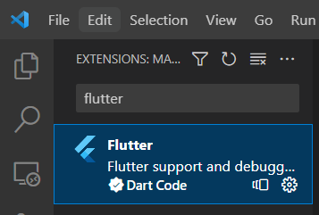
Follow same process to install Dart extension
- You can download the latest Android Studio release
The next step After downloading Andriod Studio will be to install the flutter and dart plugin for Android Studio
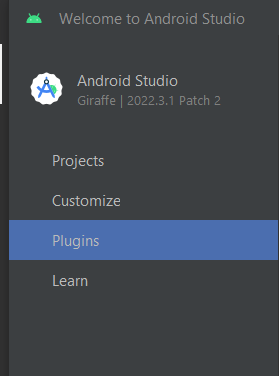
Visit the plugin Tab as on the image above
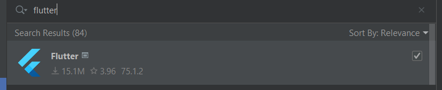
Search for flutter and install
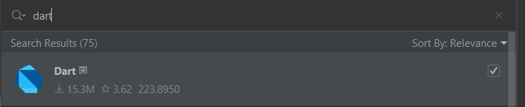
Lastly Search for dart and install
5. Clone the "December 2023 to March 2024 Applicants" Repository
To clone the Repository we need to visit project repository
- The first thing to do will be to click on
Forkinorder to create a copy of the code
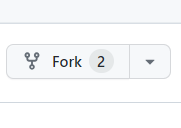
After clicking on fork on the repository page the next thing will be to confirm
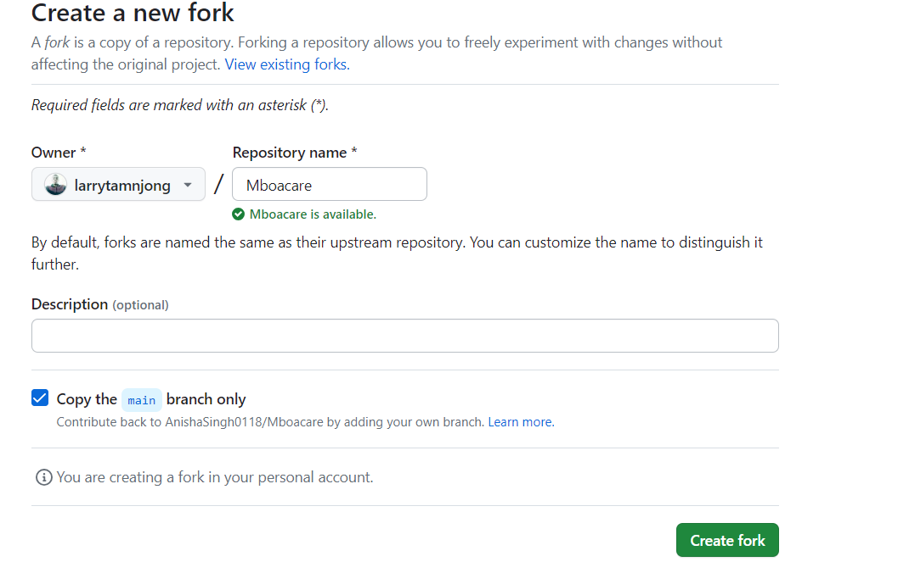
6. Clone and Set Up the "Mboacare" Medical App Project
The last thing will be to clone the fork copy of the Mboacare project on our local computer
- Open a command prompt on your computer using the
cdcommand you can navigate to a directory where you want to clone the project
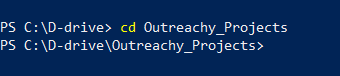
On my computer as on the above image I have navigated to a directory called Outreachy_Projects
- Now we have to go back to Github and from your profile where you forked the project
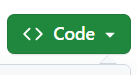
Click the green button
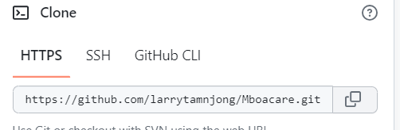
Copy the link to project
- Now move back to the command prompt and inside you desired directory run this command
git clone <Replace with copied linked>and pressEnter
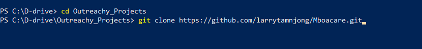
After cloning you should see an output similar to the one below
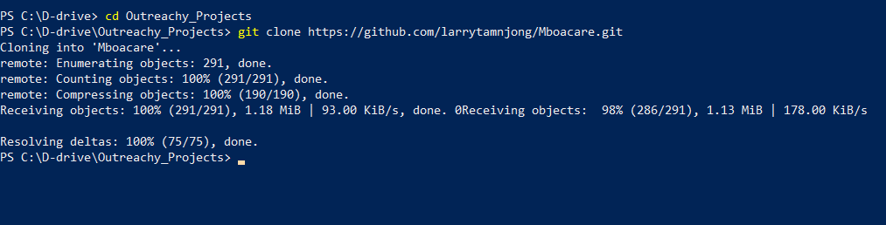
7. Open the Project and run the project
- Go your Desired Editor, In my case I'm using Android Studio
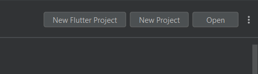
From the tab bar select Open and navigate the directory to open the project.
- After opening the project several errors will show
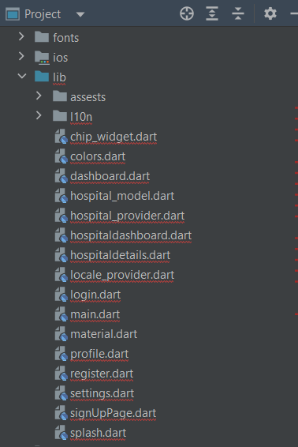
Head to the terminal and run the command flutter pub get to get all dependencies.
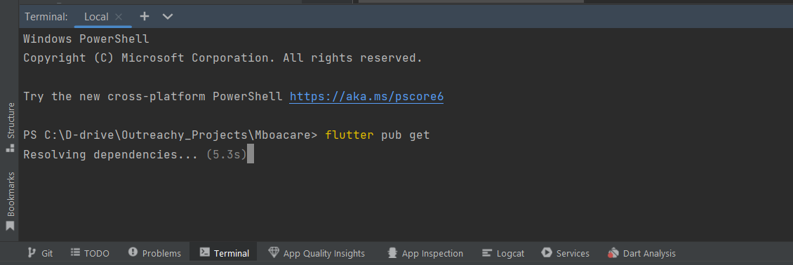
- We need to select a device from out active devices on Android studio
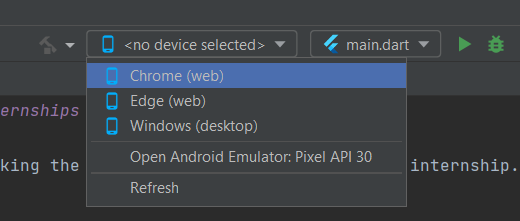
Once you choose your selected device click the play button
If everything runs well you should see this screen on your device
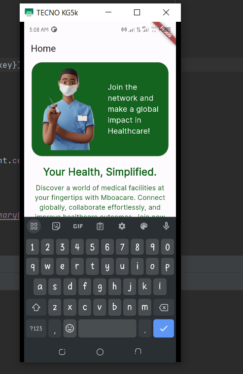